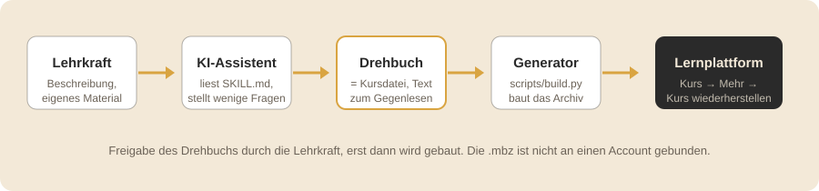

Kursmühle
Kurse wiederherstellen, die es noch nie gab.
Du beschreibst einem KI-Assistenten, was du brauchst, oder gibst ihm dein Material. Er schreibt daraus ein kurzes
Drehbuch, das du liest und freigibst. Ein Skript macht aus dem Drehbuch eine Kurssicherung (.mbz), die du
auf der ByCS-Lernplattform (früher mebis) in deinen Kurs lädst. Heraus kommt ein
Kurs mit Texten, Übungen und Tests.
Skill-Zip herunterladen Repository auf GitHub

Schnellstart
ChatGPT oder Claude
- Skill-Zip herunterladen.
- Zip hochladen und schreiben: „Entpacke das und lies SKILL.md.“ Dahinter den Kurswunsch, zum Beispiel „Mach mir eine Einheit zu Bruchrechnen für Jgst 6, 45 Minuten, Selbstlernkurs. Zeig mir zuerst das Drehbuch.“
- Drehbuch lesen, „passt“ sagen,
.mbzherunterladen und wiederherstellen.
Der Assistent braucht Code-Ausführung. Bei ChatGPT gehört sie je nach Version als „Datenanalyse“ zum Standardmodell, bei Claude steht sie je nach Version in den Einstellungen unter „Dateien erstellen und analysieren“.
ByLKI oder AIS-Chat
Diese Angebote führen keinen Code aus. Eine Fassung im Browser, die aus dem Drehbuch die Sicherung baut, kommt mit Version 2.0.
Bis dahin, noch nicht getestet: SKILL.md, references/intake.md und
references/kursdatei.md aus dem Skill-Zip als Text in den Chat einfügen und das Drehbuch schreiben
lassen. Den Bau übernimmt dann ein Assistent mit Code-Ausführung oder ab 2.0 die Fassung im Browser.
Claude Code, Codex, eigener Agent
Repository klonen und dem Agenten die Seite für Fortgeschrittene geben: eigene Kurssicherung als Vorlage, eigene Designvorlagen, Textbausteine und Fachregeln, Zip neu packen. Auf dem eigenen Rechner nötig: Python 3.11+, PyYAML und Pillow.
Keine Schülerdaten, keine Namen oder Fotos von Personen ins Material. Ob private KI-Konten dienstlich genutzt werden dürfen, regeln Schule und Sachaufwandsträger.
Mit 1.0 getestet in Claude Code (Agent mit Dateizugriff). Durchläufe in ChatGPT und claude.ai mit 1.0 stehen aus; mit Version 0.1 lief ein Kurs in ChatGPT. Ob ein kostenloses Konto reicht, ist offen.
Was dabei herauskommt
- Kursformate Themen, Kacheln (mit Kachelbild je Abschnitt), Wochen, Ein-Themen, Komprimiert, Einzelaktivität.
- Lesetexte als formatierte Textfelder und Seiten, Lesebuch, Buch; Übungen als Quiz, Zuordnen, Lernkarten, Lückentext, Geschichte mit Entscheidungen; Test mit Fragensammlung, Aufgabe, Forum, Abstimmung, Glossar, Datei und Verzeichnis.
- Übungen auf Wunsch direkt auf der Kursseite ohne Nachladen, oder eine ganze Einheit als eine Seite mit Kapiteln.
- Kursbanner und Kursbild, Badge am Ende, Nachlieferungen in einen laufenden Kurs, Freigabe nach Datum.
- Nachdem der Assistent das Drehbuch geschrieben hat und bevor die Lehrkraft es sieht, ist er angewiesen, es gegen zehn didaktische Standardannahmen und eine Liste von Sprachmarkern zu prüfen.
Wiederherstellen auf der Plattform
- Kurs öffnen (beim ersten Mal einen Testkurs) → Mehr → Kurs wiederherstellen → Datei hochladen → Wiederherstellen.
- Bestätigen: nur Weiter.
- Ziel: als neuen Kurs in eine Kategorie; oder in diesen Kurs mit „löschen und dann wiederherstellen“ (nur so kommt ein anderes Kursformat mit); oder „zusammenführen“ für Nachlieferungen, die hinten anhängen.
- Einstellungen: Weiter. Schema: bei Formatwechsel „Kurseinstellungen überschreiben: Ja“. Wiederherstellen.
- Danach Glossar-Einträge importieren (Glossar → Mehr → Einträge importieren, XML-Datei neben der Sicherung) und Badge aktivieren.
Übungs-Textfelder nicht mit „Einstellungen bearbeiten“ speichern, denn der Editor entfernt Skript und Stil. Änderungen laufen über das Drehbuch und eine neue Sicherung. Eine Sicherung darf höchstens 500 MB haben.
Ausführlich mit allen Varianten: README, Abschnitt Wiederherstellen.
Rückmeldung
Ich freue mich über Rückmeldungen: Hilft Kursmühle im Unterrichtsalltag, was fehlt, wo hat es gehakt? Schreib mir an kursmuehle@pm.me (öffnet der Link kein Mailprogramm, einfach die Adresse kopieren). Ein GitHub-Konto ist nicht nötig; wer am Code mitarbeitet, kann zusätzlich ein Issue anlegen. Am meisten hilft mir, wenn Fach, Jahrgangsstufe, Assistent und Dauer dabeistehen. Gesammelte Rückmeldungen stehen in Erfahrungen.